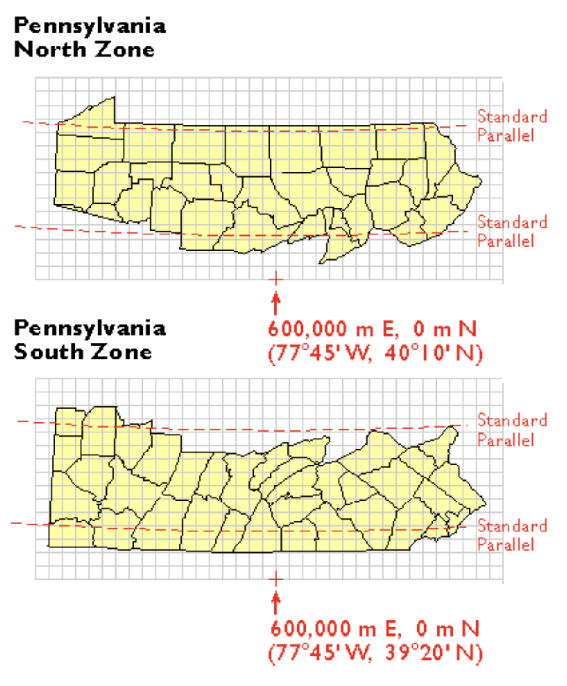

get_acs(..., geometry=TRUE)Week 4: Spatial Data
Spatial Operations in R
Review from Week 3
Example:
Take a census tract where bike usage goes from 25% to 20% between the 2023 and 2015 5YE.
The moe in the data is tied to the 90% confidence interval. It’s the range of values where the true, unknown value lives.
| Estimate | Margin of Error | |
|---|---|---|
| 2015 | 20% | ±3.0 |
| 2023 | 25% | ±4.0 |
It’s important to know that we can’t just add the margins of errors. We need to convert it to the standard error \(SE\). For our example:
\[ SE_{2015}=\frac{3}{1.645}=1.82 \]
\[ SE_{2023}=\frac{4}{1.645}=2.43 \]
To get the difference of the standard errors:
\[ SE_{\text{diff}}=\sqrt{SE_{2015}^2+SE_{2023}^2} = 3.04 \]
\[ Z=\frac{25-20}{3.04}=1.64 \]
Since \(1.64 \le 1.645\), we cannot reject \(H_0\) that the difference is due to sampling noise.
Joining Tables
Table 1:
GEOID |
med_inc23 |
|---|---|
100 |
82000 |
200 |
31500 |
300 |
45000 |
Table 2:
GEOID |
med_inc15 |
|---|---|
100 |
61000 |
200 |
27000 |
400 |
39000 |
The operation left_join(income_23, income_15, by=GEOID) results in the output of this table:
GEOID |
med_inc23 |
med_inc15 |
|---|---|---|
100 |
82000 |
61000 |
200 |
31500 |
45000 |
300 |
45000 |
NA |
Join Types
left_join() keeps only rows that are in the “left” (first specified) table
inner_join(): keeps only common rows between both tables
full_join(): keeps all rows in both tables
Coordinate Reference Systems (CRS)
When you request census data through this method:
It adds a geometry column with geometric data in a coordinate reference system!
Geographic CRS
The true shape of the earth is a lumpy geoid and we can’t really put a grid on it. Instead, we approximate the shape of the Earth with an ellipsoid. There can be many types of ellipsoids.
No matter how we draw an ellipsoid, it’s never going to perfectly match the geoid.
Lines of latitude and longitude derived from a specific ellipsoid can be referred to as a datum or a geographic coordinate reference system. For example, the North American Datum of 1983 (NAD83) has the ellipsoid of GRS-80. Whenever coordinates are given in latitude/longitude, they are from a geographic CRS.
The World Geodetic Datum of 1984 (WGS84), like NAD83, is Earth-centered via satellites. It is the standard for GPS data and is global (rather than NAD83, though it is not that far off).
However, when you’re doing spatial analysis, you are typically not going to measure in degrees.
Projected CRS
When we project a 3D object onto a 2D object, the shapes, area, distance, and direction will be distorted. All projected CRS start out with a 3D model of the Earth which then will be flattened.
The issue is that the flat surface will not touch all of the parts of the Earth perfectly. Where the Earth touches the projection, it will be projected perfectly. Everywhere else will be projected larger and distorted. The tangent line is where there is the least distortion.
The Mercator projection is cylindrical, and areas closer to the poles have extreme size distortion. Conic projections are better for countries like Russia and Canada at higher latitudes. Transverse cylindrical projections run along lines of longitude, and are better for continents like the Americas that are very long north-south. Planar or azimuthal projections are good for the poles.
Choosing a CRS
We need to select a datum and a type of projected CRS.
Projected CRS are good for local mapping. For example, state planes are used to minimize distortion within certain parts of the state. They are measured in both feet and meters.

Universal Transverse Mercator Zones divide the Earth into 60 vertical zones, each 6 degrees wide. UTM coordinates are in meters and do not have negative numbers.
Important
Say we’re checking st_crs(data) and our CRS is missing or labelled incorrectly.
We will then use st_set_crs() to set a CRS and label the CRS correctly.
To change the CRS, use st_transform(stations, 2272). Since we are using the correct units, we can then do spatial operations such as st_buffer(stations, 500)
Spatial Analysis
Anything dealing with spatial data will have a prefix of st before the method.
Boolean operations
st_intersects(A, B)returns a boolean value on if A or B intersect.st_touches(A, B)returns a boolean value on if A or B share a border.st_within(A, C)returns a boolean value on if C is completely within A.
Filtering operations
st_filter()selects features based on a specified distancest_intersection()creates a new polygon based on the overlap between twost_union()is likest_intersection(), though it keeps the polygon boundaries within the overlap
Joining operations
st_join()performs spatial joins (ex. assigning tract attributes to each station)st_distance()returns a matrix with the distance between every station and tract